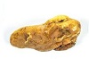

Så här går det till att smida i brons

Kan man laga vigselringar?
Kan man laga vigselringar som har klippts upp och deformerats? Bilden nedan visar hur guldringarna såg ut innan jag började min renovering av förlovningsring och vigselring. I vigselringen så hade en diamant lossnat och den hade kunden kvar, så den skall också sättas i igen. Den vänstra ringen i bild var riktigt tilltygad och skev, så det jag började med var att rikta upp guldringens form.
Efter smältning av guldet och valsning så påbörjar jag formgivning av en guldkula utifrån den design av ring som jag tagit fram tillsammans med paret. De önskade något väldigt enkelt och efter lite bollande av designförslag så landade det på att jag skulle tillverka en slät guldring med en kula med en diameter på lite drygt 4 mm. Ringens bredd skulle vara ca 2 mm. Jag börjar att markera